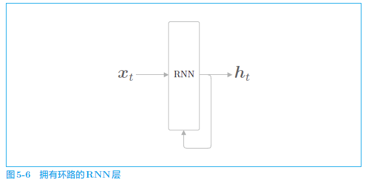
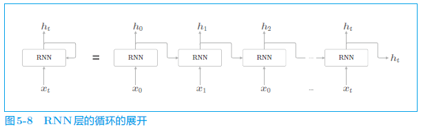
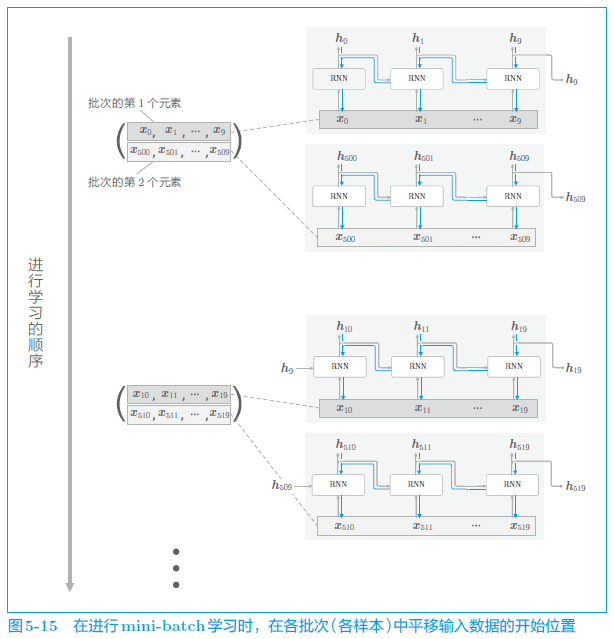
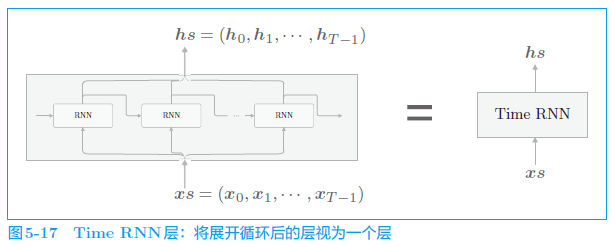
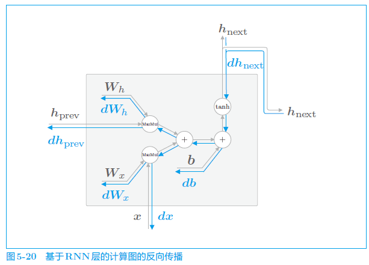
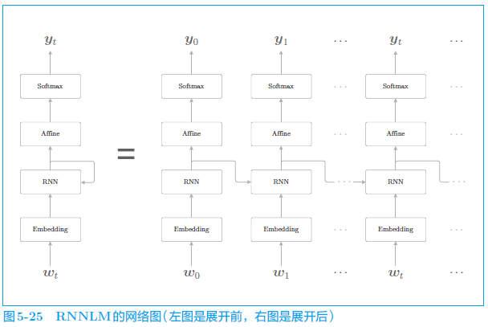
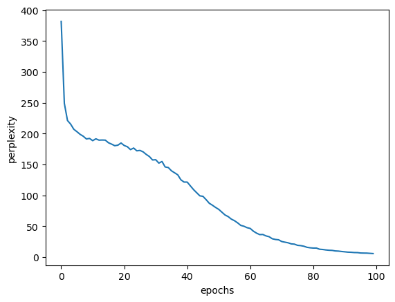

前言
虽然前馈网络结构简单、易于理解，但是可以应用于许多任务中。不过，这种网络存在一个大问题，就是不能很好地处理时间序列数据（以下简称为“时序数据”）。更确切地说，单纯的前馈网络无法充分学习时序数据的性质（模式）。于是，**RNN（Recurrent Neural Network，循环神经网络）**便应运而生。
正文
5.1 概率和语言模型
5.1.1 概率视角下的 word2vec
复习一下 word2vec 的 CBOW 模型。这里，我们来考虑由单词序列 表示的语料库，将第 个单词作为目标词，将它左右的（第 个和第 个）单词作为上下文。
用数学式来表示“当给定 w_{t−1} 和 时目标词是 的概率”：
CBOW 模型的损失函数：
5.1.2 语言模型
**语言模型（language model）**给出了单词序列发生的概率。
由 P (w_t|w_1,...,w_{t−1}) 表示的模型称为条件语言模型（conditional language model），有时也将其称为语言模型。
5.1.3 将 CBOW 模型用作语言模型？
我们将上下文限定为左侧的 2 个单词。如此一来，就可以用 CBOW 模型（CBOW 模型的后验概率）近似表示。
在机器学习和统计学领域，经常会听到“马尔可夫性”（或者“马尔可夫模型”“马尔可夫链”）这个词。马尔可夫性是指未来的状态仅依存于当前状态。此外，当某个事件的概率仅取决于其前面的 N 个事件时，称为“N 阶马尔可夫链”。这里展示的是下一个单词仅取决于前面 2 个单词的模型，因此可以称为“2 阶马尔可夫链”。
5.2 RNN
5.2.1 循环的神经网络
RNN 的特征就在于拥有这样一个环路（或回路）。这个环路可以使数据不断循环。通过数据的循环，RNN 一边记住过去的数据，一边更新到最新的数据。

5.2.2 展开循环

各个时刻的 RNN 层接收传给该层的输入和前一个 RNN 层的输出，然后据此计算当前时刻的输出，此时进行的计算可以用下式表示：
RNN 的 存储“状态”，时间每前进一步（一个单位），它就以上式的形式被更新。许多文献中将 RNN 的输出 称为隐藏状态（hidden state）或隐藏状态向量（hidden state vector），本书中也是如此。
5.2.3 Backpropagation Through Time
将循环展开后的 RNN 可以使用（常规的）误差反向传播法。换句话说，可以通过先进行正向传播，再进行反向传播的方式求目标梯度。因为这里的误差反向传播法是“按时间顺序展开的神经网络的误差反向传播法”，所以称为 Backpropagation Through Time（基于时间的反向传播），简称BPTT。
5.2.4 Truncated BPTT
在处理长时序数据时，通常的做法是将网络连接截成适当的长度。具体来说，就是将时间轴方向上过长的网络在合适的位置进行截断，从而创建多个小型网络，然后对截出来的小型网络执行误差反向传播法，这个方法称为 Truncated BPTT（截断的 BPTT）。
Truncated 是“被截断”的意思。Truncated BPTT 是指按适当长度截断的误差反向传播法。
5.2.5 Truncated BPTT 的 mini-batch 学习

通过 Truncated BPTT 进行学习的例子，对长度为 1000 的时序数据，以时间长度 10 为单位进行截断。此时，如何将批大小设为 2 进行学习呢？在这种情况下，作为 RNN 层的输入数据，第 1 笔样本数据从头开始按顺序输入，第 2 笔数据从第 500 个数据开始按顺序输入。也就是说，将开始位置平移 500。
5.3 RNN 的实现


1 | |
5.3.2 Time RNN 层的实现
Time RNN 层是 T 个 RNN 层连接起来的网络。我们将这个网络实现为 Time RNN 层。这里，RNN 层的隐藏状态 h 保存在成员变量中。
1 | |
5.4 处理时序数据的层的实现
我们将基于 RNN 的语言模型称为 RNNLM（RNN Language Model，RNN 语言模型）
5.4.1 RNNLM 的全貌图

5.4.2 Time 层的实现
实现为了 Time RNN 层，这里也同样使用 Time Embedding 层、Time Affine 层等来实现整体处理时序数据的层。
5.5 RNNLM 的学习和评价
5.5.1 RNNLM 的实现
1 | |
5.5.2 语言模型的评价
**困惑度（perplexity）**常被用作评价语言模型的预测性能的指标。困惑度表示“概率的倒数”（这个解释在数据量为 1 时严格一
致）。
“模型 1”能准确地预测，困惑度是 1.25；“模型 2”的预测未能命中，困惑度是 5.0。此例表明，困惑度越小越好。
在输入数据为多个时：
L=-\frac{1}{N}\sum_n\sum_kt_{nk}\log y_{nk}\\ 困惑度=e^L：数据量
：one-hot 向量形式的正确解标签
：第 个数据的第 个值
：概率分布（神经网络中的 Softmax 的输出）
5.5.3 RNNLM 的学习代码
下面，我们使用 PTB 数据集进行学习，不过这里仅使用 PTB 数据集（训练数据）的前 1000 个单词。这是因为在本节实现的 RNNLM 中，即便使用所有的训练数据，也得不出好的结果。
1 | |
corpus size: 1000, vocabulary size: 418
| epoch 1 | perplexity 381.82
| epoch 2 | perplexity 249.18
| epoch 3 | perplexity 221.29
| epoch 4 | perplexity 215.43
| epoch 5 | perplexity 207.15
| epoch 6 | perplexity 203.17
| epoch 7 | perplexity 198.93
| epoch 8 | perplexity 195.85
| epoch 9 | perplexity 191.45
| epoch 10 | perplexity 192.29
| epoch 11 | perplexity 188.65
| epoch 12 | perplexity 191.66
| epoch 13 | perplexity 189.51
| epoch 14 | perplexity 189.71
| epoch 15 | perplexity 189.52
| epoch 16 | perplexity 185.28
| epoch 17 | perplexity 183.06
| epoch 18 | perplexity 180.49
| epoch 19 | perplexity 181.37
| epoch 20 | perplexity 184.87
| epoch 21 | perplexity 180.87
| epoch 22 | perplexity 178.83
| epoch 23 | perplexity 174.18
| epoch 24 | perplexity 176.73
| epoch 25 | perplexity 172.20
| epoch 26 | perplexity 172.87
| epoch 27 | perplexity 170.56
| epoch 28 | perplexity 166.38
| epoch 29 | perplexity 162.95
| epoch 30 | perplexity 157.38
| epoch 31 | perplexity 157.81
| epoch 32 | perplexity 152.31
| epoch 33 | perplexity 154.94
| epoch 34 | perplexity 146.07
| epoch 35 | perplexity 145.13
| epoch 36 | perplexity 139.85
| epoch 37 | perplexity 136.63
| epoch 38 | perplexity 133.32
| epoch 39 | perplexity 125.23
| epoch 40 | perplexity 121.62
| epoch 41 | perplexity 121.58
| epoch 42 | perplexity 115.46
| epoch 43 | perplexity 109.48
| epoch 44 | perplexity 104.39
| epoch 45 | perplexity 99.35
| epoch 46 | perplexity 98.50
| epoch 47 | perplexity 93.12
| epoch 48 | perplexity 87.29
| epoch 49 | perplexity 84.13
| epoch 50 | perplexity 80.55
| epoch 51 | perplexity 77.43
| epoch 52 | perplexity 72.89
| epoch 53 | perplexity 68.34
| epoch 54 | perplexity 65.69
| epoch 55 | perplexity 61.66
| epoch 56 | perplexity 59.06
| epoch 57 | perplexity 55.59
| epoch 58 | perplexity 51.44
| epoch 59 | perplexity 50.10
| epoch 60 | perplexity 47.76
| epoch 61 | perplexity 46.54
| epoch 62 | perplexity 42.07
| epoch 63 | perplexity 38.95
| epoch 64 | perplexity 36.56
| epoch 65 | perplexity 36.69
| epoch 66 | perplexity 34.47
| epoch 67 | perplexity 33.12
| epoch 68 | perplexity 29.81
| epoch 69 | perplexity 28.68
| epoch 70 | perplexity 28.15
| epoch 71 | perplexity 25.35
| epoch 72 | perplexity 24.31
| epoch 73 | perplexity 23.32
| epoch 74 | perplexity 21.55
| epoch 75 | perplexity 21.12
| epoch 76 | perplexity 19.21
| epoch 77 | perplexity 18.71
| epoch 78 | perplexity 17.76
| epoch 79 | perplexity 16.01
| epoch 80 | perplexity 15.20
| epoch 81 | perplexity 14.74
| epoch 82 | perplexity 14.76
| epoch 83 | perplexity 12.86
| epoch 84 | perplexity 12.45
| epoch 85 | perplexity 11.71
| epoch 86 | perplexity 11.20
| epoch 87 | perplexity 10.99
| epoch 88 | perplexity 10.09
| epoch 89 | perplexity 9.84
| epoch 90 | perplexity 9.20
| epoch 91 | perplexity 8.68
| epoch 92 | perplexity 8.12
| epoch 93 | perplexity 7.94
| epoch 94 | perplexity 7.49
| epoch 95 | perplexity 7.43
| epoch 96 | perplexity 6.77
| epoch 97 | perplexity 6.63
| epoch 98 | perplexity 6.58
| epoch 99 | perplexity 6.19
| epoch 100 | perplexity 5.84

5.5.4 RNNLM 的 Trainer 类
-
按顺序生成 mini-batch
-
调用模型的正向传播和反向传播
-
使用优化器更新权重
-
评价困惑度
5.6 小结
-
RNN 具有环路，因此可以在内部记忆隐藏状态
-
通过展开 RNN 的循环，可以将其解释为多个 RNN 层连接起来的神经网络，可以通过常规的误差反向传播法进行学习（= BPTT）
-
在学习长时序数据时，要生成长度适中的数据块，进行以块为单位的 BPTT 学习（= Truncated BPTT）
-
Truncated BPTT 只截断反向传播的连接
-
在 Truncated BPTT 中，为了维持正向传播的连接，需要按顺序输入数据
-
语言模型将单词序列解释为概率
-
理论上，使用 RNN 层的条件语言模型可以记忆所有已出现单词的信息